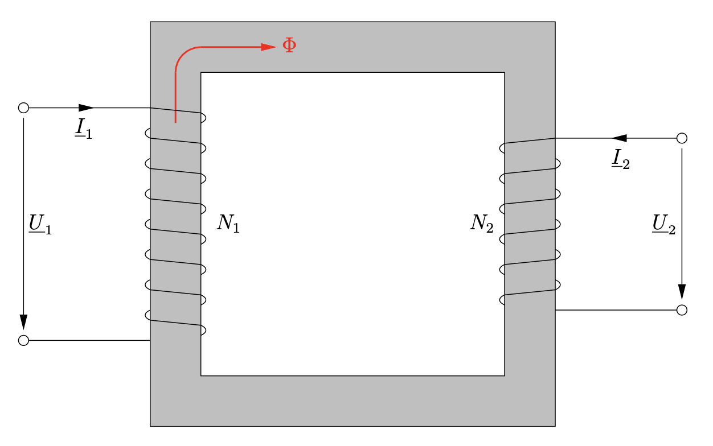
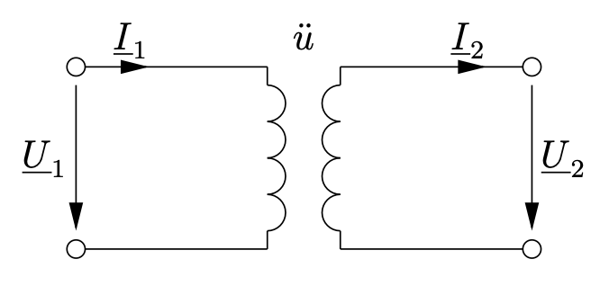
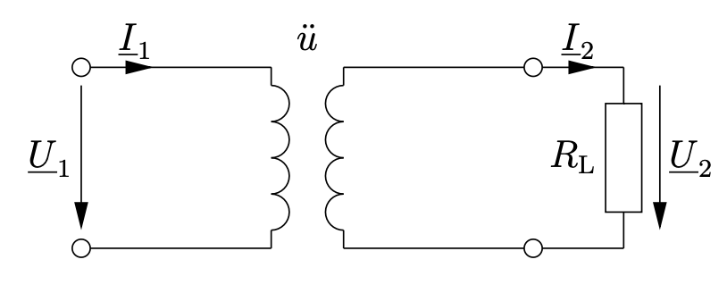
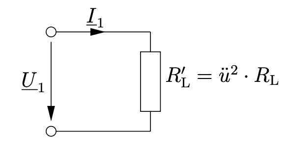
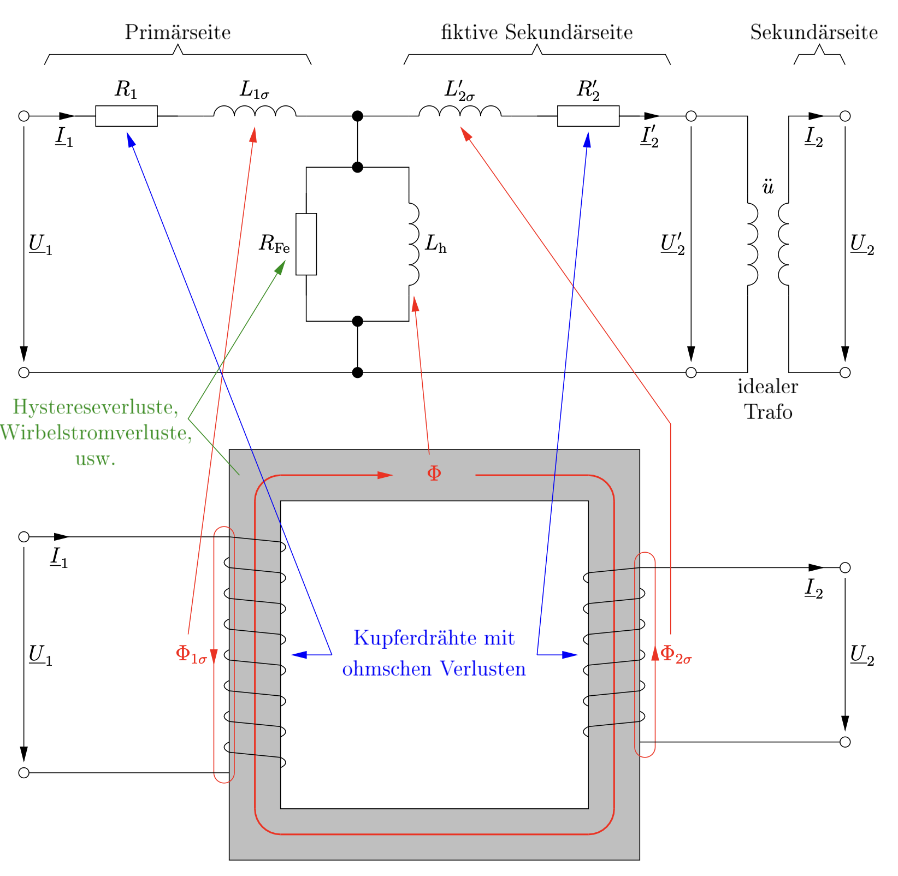
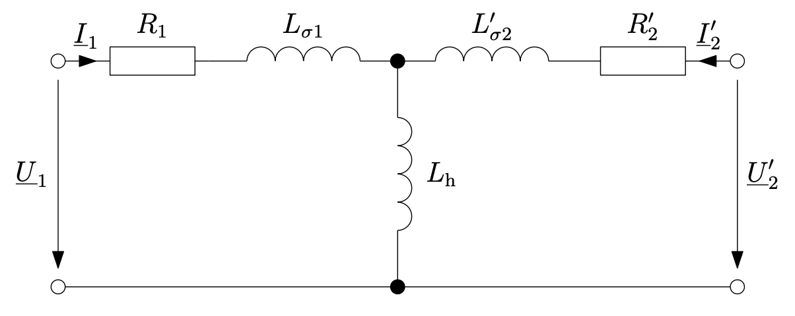

25 Transformator
- idealer Transformator
- T-Ersatzschaltbild
- Vermessung eines Transformators
In den meisten Fällen besteht ein Transformator, oder auch kurz Trafo, aus mehreren magnetisch gekoppelten Spulen, die meistens auf einen Eisenkern gewickelt werden. Von Interesse ist zunächst nur der 1-phasige Transformator.

Entn. aus (Schenke 2023)
Die Wicklung, die an die Spannungsversorgung angeschlossen ist, ist die Eingangsseite und wird Primärwicklung genannt, mit \(N_1\) Windungen. Die Sekundärwicklung ist dagegenen an der Ausgangsseite angeschlossen, mit der Anzahl \(N_2\) Windungen, und ihr wird die Energie entnommen.
Der Zusammenhang der Spannungen und Ströme auf der Primär- und Sekundärseite kann mithilfe des magnetischen Kreises betrachtet werden. Diese Zusammenhänge sollten bereits Elektrodynamik bekannt sein.
25.1 Idealer Transformator
Als erstes wird der ideale Transformator betrachtet. Dieser Transformator hat keine Verluste und kann über das folgende einfache Ersatzschaltbild dargestellt werden.

Entn. aus (Schenke 2023)
Von Interesse ist hier das Übersetzungsverhältnis \(ü\), da hiermit das Verhältnis der Spannungen \(U_1\) und \(U_2\) beschrieben werden kann. Unter Anwendung des Induktionsgesetzes
\[u_q = N \cdot \frac{d \Phi_t}{dt}\]
kann der Rückschluss auf die Anzahl der Windungen \(N\) geschlossen werden.
\[\frac{U_1}{U_2} = \frac{N_1}{N_2} = ü\]
Eine häufige Anwendung von Transformatoren ist die Änderung einer Spannung, zum Beispiel könnte die Netzspannung für den Betrieb eines Gerätes herunter transformiert werden. Dazu wird einmal beispielsweise ein Lastwiderstand \(R_L\) an die Ausgangsseite des Transformators angeschlossen:

Entn. aus (Schenke 2023)
Dadurch ergeben sich für Strom und Widerstand:
\[I_2 = ü \cdot I_1\]
\[ü^2 \cdot R_L = \frac{U_1}{I_1}\]
Durch die zweite Gleichung entsteht nun direkter Vergleich mit der Eingangsseite, für diese “fühlt” es sich so an, als wäre sie direkt mit dem Widerstand \(R^{\prime}_L = ü^2 \cdot R_L\) verbunden.

Entn. aus (Schenke 2023)
25.2 T-Ersatzschaltbild
Da es jedoch keine idealen Transformatoren gibt, müssen die Verluste berücksichtigt werden.
In den Leitungen gibt es ohmsche Verluste, es gibt Verluste im Eisenkern, dort werden Hysterese- und Wirbelstromverluste zusammengefasst, und auch durch die Ausbreitung des magnetischen Flusses in der Luft trägt zu den Verlusten bei.
Das T-Ersatzschaltbild berücksichtigt all diese Verluste:

Entn. aus (Schenke 2023)
Da die Ersatzgrößen auf der fiktiven Sekundärseite den idealen Transformator schon enthalten, wird dieser oft nicht mitgezeichnet.

Entn. aus (Schenke 2023)
Die Zusammenhänge der realen und fiktiven Größen der Sekundärseite sind hier zusammengefasst:
\[R^{\prime}_2 = ü^2 \cdot R_2\]
\[L^{\prime}_{2\sigma} = ü^2 \cdot L_{2\sigma}\]
\[\underline{Z}^{\prime}_L = ü^2 \cdot \underline{Z}_L\]
\[\underline{U}^{\prime}_2 = ü \cdot \underline{U}_2\]
\[\underline{I}^{\prime}_2 = \frac{1}{ü} \cdot \underline{I}_2\]
25.2.1 T-Symmetrie
Bei einem sinnvoll dimensioniertem Transformator liegt eine sogenannte T-Symmetrie vor:
\[R_1 = R^{\prime}_2\]
\[L_{1\sigma} = L^{\prime}_{2\sigma}\]
25.3 Vermessung eines Transformators
Um die Größen des Ersatzschaltbildes zu bestimmen, kann man zwei einfache Messungen anwenden.
25.4 Leerlaufversuch
An der Primärseite wird die Nennspannung \(\underline{U}_{1N}\) angeschlossen und die Sekundärseite im Leerlauf betrieben.

Entn. aus (Schenke 2023)
Zur Ermittlung der Werte muss bekannt sein, dass die Wicklungsverluste in Vergleich zu den Eisenverlusten und die Streuinduktivität der Hauptinduktivität vernachlässigbar klein sind. Dadurch vereinfacht sich das Ersatzschaltbild weiter:

Entn. aus (Schenke 2023)
In der Praxis misst man nun die Nenneingangsspannung, den Nennleerlaufstrom und entweder die umgesetzte Wirkleistung \(P_L\) oder den Phasenverschiebungswinkel \(\varphi_L\) (zwischen \(U_{1N}\) und \(I_{1L}\)).
25.5 Kurzschlussversuch
Bei dem Kurzschlussversuch wird die Sekundärseite kurzgeschlossen. Hier muss beachtet werden, dass nun auch der Primärseite keine Nennspannung angelegt werden darf, dies würde wegen des Kurzschlusses den Transformator beschädigen!
Man erhöht daher langsam die primärseitige Spannung, bis der Nennstrom fließt. Dieser Strom fließt nun fast ausschließlich durch die Längsimpedanzen.

Entn. aus (Schenke 2023)
Wenn man die T-Symmetrie in Betracht zieht vereinfacht sich das Ersatzschaltbild erheblich.

Entn. aus (Schenke 2023)
Dabei gilt:
\[R_k = R_1 + R^{\prime}_2 = 2 R_1\]
\[L_k = L_{1\sigma} + L^{\prime}_{2\sigma} = 2 L_{1\sigma}\]
25.6 Übungen
25.6.1 Übung 10.1
(Schenke Trainingsaufgabe 35.1)
Beginnen Sie bei der folgenden Aufgabe mit dem vollständigen T-Ersatzschaltbild. Der Aufgabentext gibt Ihnen Hinweise, ob Sie Elemente des Ersatzschaltbildes weglassen können.
An einem T-Symmetrischen Transformator führen Sie den Leerlauf- und den Kurzschlussversuch durch. Die im Leerlauf gemessene Wirkleistungsaufnahme kann vernachlässigt werden.
Zeichnen Sie das T-Ersatzschaltbild dieses Transformators.

Entn. aus (Schenke 2023)
25.6.2 Übung 10.2
(Schenke Trainingsaufgabe 35.4)
Beginnen Sie bei der folgenden Aufgabe mit dem vollständigen T-Ersatzschaltbild. Überlegen anhand der Messwerte, ob Sie Elemente des Ersatzschaltbildes weglassen können.
An einem T-Symmetrischen Transformator führen Sie bei der Frequenz \(f = 50\,Hz\) den Leerlauf- und Kurzschlussversuch durch.
Beim sekundärseitigen Leerlauf messen Sie auf der Primärseite die folgenden Werte:
\[U_1 = 200\,V\]
\[I_1 = 1\,A\]
\[P_1 = 20\,W\]
Beim sekundärseitigen Kurzschluss messen Sie auf der Primärseite die folgenden Werte:
\[U_1 = 2\,V\]
\[I_1 = 10\,A\]
\[P_1 = 20\,W\]
Zeichnen Sie das T-Ersatzschaltbild dieses Transformators.

Entn. aus (Schenke 2023)
25.6.3 Übung 10.3
(Schenke Trainingsaufgabe 35.7)
In der folgenden Aufgabe betrachten Sie nur das Leerlauf-Ersatzschaltbild des Transformators. Berechnen Sie dessen Bauelemente anhand der Messwerte.
An einem T-Symmetrischen Transformator führen Sie bei der Frequenz \(f = 50\,Hz\) den Leerlaufversuch durch.
Auf der Primärseite messen Sie die folgenden Werte:
\[U_1 = 200\,V\]
\[I_1 = 1\,A\]
\[P_1 = 50\,W\]
Berechnen Sie die Elemente \(R_{Fe}\) und \(L_h\) des T-Ersatzschaltbildes.
\[R_{Fe} = \frac{U_1^2}{P_1} = \frac{(200\,V)^2}{50\,W} = 800\,\Omega\]
\[Q_L = \sqrt{(U_1 \cdot I_1)^2 - P_1^2} = \sqrt{(200\,VA)^2 - (50\,W)^2} = 193,65\,var\]
\[L_h = \frac{U_1^2}{2\pi \cdot f \cdot Q_L} = \frac{40000\,V^2}{2\pi \cdot 50\,Hz \cdot 193,65\,var} = 657,5\,mH\]
25.6.4 Übung 10.4
(Schenke Trainingsaufgabe 35.14)
In der folgenden Aufgabe betrachten Sie nur das Kurzschluss-Ersatzschaltbild des Transformators. Berechnen Sie dessen Bauelemente anhand der Messwerte.
An einem T-Symmetrischen Transformator mit dem Übersetzungsverhältnis \(ü = 10\) führen Sie bei der Frequenz \(f = 50\,Hz\) den Kurzschlussversuch durch.
Auf der Primärseite messen Sie die folgenden Werte:
\[U_1 = 5\,V\]
\[I_1 = 10\,A\]
\[\varphi_1 = 45°\]
Berechnen Sie die Elemente \(R_1\), \(R^{\prime}_2\), \(L_{1\sigma}\) und \(L^{\prime}_{2\sigma}\) des T-Ersatzschaltbildes, sowie die Werte des sekundären Wicklungswiderstandes \(R_2\) und der sekundären Streuinduktivität \(L_{2\sigma}\).
\[R_k = \frac{U_1}{I_1}\cdot \cos(\varphi_1) = \frac{5\,V}{10\,A} \cdot \cos(45°) = 353,55\,m\Omega\]
\[R_1 = R^{\prime}_2 = \frac{R_k}{2} = \frac{353,55\,m\Omega}{2} = 176,78\,m\Omega\]
\[L_k = \frac{U_1}{\omega \cdot I_1} \cdot \sin(\varphi_1) = \frac{5\,V}{2\pi \cdot 50\,Hz \cdot 10\,A} \cdot \sin(45°) = 1,13\,mH\]
\[L_{1\sigma} = L^{\prime}_{2\sigma} = \frac{L_k}{2} = \frac{1,13\,mH}{2} = 562,7\,\mu H\]
\[R_2 = \frac{R^{\prime}_2}{ü^2} = \frac{176,78\,m\Omega}{100} = 1,77\,m\Omega\]
\[L_{2\sigma} = \frac{L^{\prime}_{2\sigma}}{ü^2} = \frac{562,7\,\mu H}{100} = 5,63\,\mu H\]